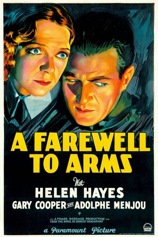
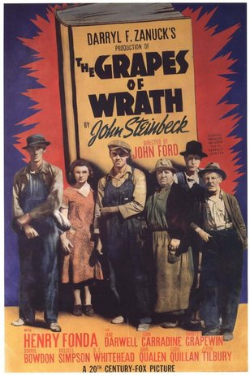
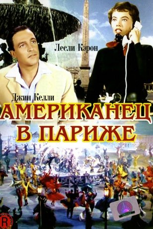
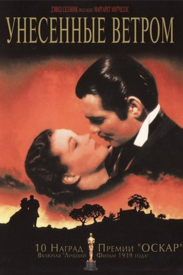

OSCAR
Жанр: Драма с 1929г. по 1960г.




Название фильма
Год
Колличество оскаров
Крылья
1929г
2
Восход солнца
1929г
3
Бродвейская мелодия
1930г
3
Вольная душа
1931г
3
Табу
1931г
1
Гранд отель
1932г
1
Шанхайский экспресс
1932г
3
Кавалькада
1934г
4
Маленькие женщины
1934г
3
Одна ночь любви
1935г
6
Осведомитель
1936г
6
Великий Зигфилд
1937г
7
Сан-Франциско
1937г
6
Жизнь Эмиля Золя
1938г
10
Город мальчиков
1939г
5
Иезавель
1938г
5
Гроздья гнева
1941г
7
Как зелена была моя долина
1942г
11
Миссис Минивер
1943г
12
Песня Бернадетт
1944г
12
Вильсон
1945г
10
Портрет Дориана Грея
1946г
3
Лучшие годы нашей жизни
1947г
8
Анна и король Сиама
1947г
5
Джентельменское соглашение
1948г
8
Все о Еве
1951г
14
Американец в париже
1952г
8
Место под солнцем
1952г
9
Три монеты в фонтане
1955г
3
Марти
1956г
8
Сайонара
1958г
10
За отдельными столиками
1959г
7
Путь наверх
1960г
6
Назад
Ильин Андрей Юрьевич ИКБО-20-19